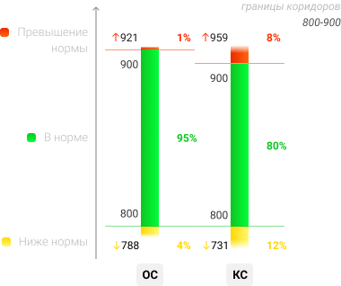
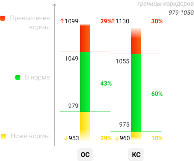
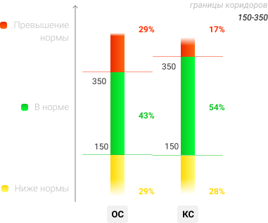
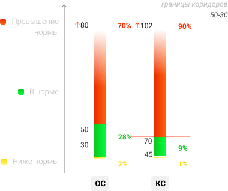
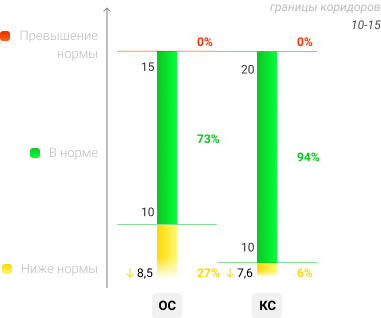
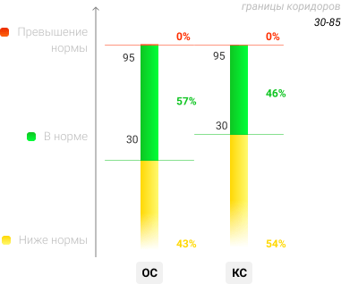

Мониторинг значений управляющих взаимодействий
ФЛОТАЦИЯ
1 мая - 1 июня 2020

Марка
Доля в объёме
Ad концентрат
Ф
П
Ad отходы
Ф
П
КС
70%
6,5%
8,0%
59,7%
50,0%
ОС
30%
7,0%
8,0%
67,9%
66,9%
Расход питания (м³/ч)
Плотность питания флотации (г/л)
Плотность питания КПФ (г/л)
Расход собирателя (л/ч)
Расход вспенивателя
Уровень в радиальном сгустителе
- Причины отклонений
- Высокая плотность питания
- Неоптимальная крупность питания
- Не качают насосы реагентов
- Забиты фильтры/плотномер
- Неисправность расходомера
- Следующие шаги
- Уточняются...